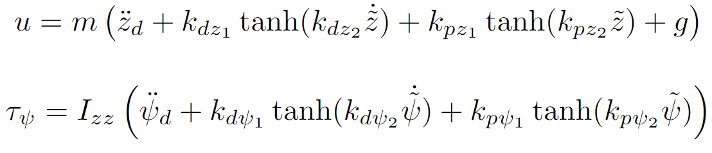

Simulação
Ao utilizar a plataforma pela primeira vez, você pode optar por criar um código para controlar o robô ou utilizar os códigos disponíveis na aba de exemplos para simulação. O algoritmo segue a seguinte estrutura:
Na pasta de exemplos do AuRoRA, há alguns arquivos exemplos que servem como referência para a simulação de robôs. Esses arquivos são úteis para o aprendizado e para compreender o funcionamento da plataforma. Recomenda-se fazer uma cópia do arquivo original antes de utilizá-los, a fim de evitar alterações indesejadas.
Abrir o arquivo "simulacaocopia" no MATLAB. Nesse caso, o arquivo é uma cópia do exemplo de simulação de controle da posição.
No caso em que se deseja fazer um novo arquivo do zero, é importante que essa estrutura inicial padrão seja mantida.
É crucial destacar que na variável "PastaRaiz" é necessário que conste o nome exato da pasta tal como está salvo em seu computador. Por exemplo, se a pasta for nomeada como "AuRoRA" em vez de "AuRoRA 2018", então esse nome deve ser substituído dentro do código.
Nesse início do código, é realizada a inicialização dos robôs que serão utilizados, sendo o ArDrone o exemplo aqui considerado. Para isso, declara-se A=ArDrone. Com esta instrução, o robô referenciado por A irá herdar todas as informações contidas na classe do ArDrone. Inicialmente, todas as variáveis do robô, exceto a variável z, são definidas como zero devido às configurações pré-definidas na classe ArDrone. A variável z é definida com um valor correspondente à altura de 0,75m. Caso seja desejado definir uma posição inicial específica para o drone, isso pode ser feito logo abaixo da sua inicialização.
O vetor de referência X é definido pelas seguintes variáveis:
O vetor é originalmente composto por 12 variáveis, no entanto, para determinar apenas a posição do drone no espaço 3D, é preciso apenas das três primeiras variáveis (1:3) que são as que correspondem a x, y, e z.
Logo após a inicialização, encontramos a declaração de um joystick para aqueles que desejam implementá-lo, juntamente com a criação de um arquivo de texto destinado a armazenar as informações da simulação. Além disso, é criado o ambiente de simulação e a representação gráfica do robô dentro deste ambiente, identificado como "figure (1)".
Com tudo isso configurado, podemos agora iniciar o laço controle, onde o usuário definirá sua estratégia e a missão do robô:
Definimos o tempo de simulação, inicializamos os contadores e criamos o loop de controle, onde especificamos a posição desejada do drone.
Neste ponto, foi definida a posição desejada, onde pretendemos que nosso drone parta de uma altitude de 0.75m e suba até 2m. No entanto, ainda falta implementar o controlador. O controlador é uma função matemática que calcula os sinais de controle com base nas informações da posição atual e desejada. A partir dessas informações, ele calcula o "erro" e retorna comandos para realizar a tarefa.
No AuRoRA, existem alguns controladores pré-programados prontos para serem utilizados. No entanto, se o usuário desejar criar um novo controlador personalizado, isso também é possível. Basta ter um referencial teórico das equações para uma implementação adequada.
Para este exemplo, foi utilizado o controlador "cUnderActuatedController".
Se for de interesse utilizar o joystick para controlar o robô, é necessário adicioná-lo após o controlador, uma vez que é preciso sobrepor os sinais de controle calculados pelo controlador autônomo:
Se o usuário estiver interessado em controlar as posições do drone ao longo do tempo, isso também pode ser feito dentro do loop, por exemplo:
No decorrer deste loop, ocorre o seguinte: nos primeiros 10 segundos de simulação, o drone é controlado a uma altura de 0.2m; entre 10 e 20 segundos, ele sobe para 0.5m; entre 20 e 30 segundos, ele sobe ainda mais, alcançando 2m de altura; por fim, nos últimos 10 segundos, ele desce, estabilizando em 1m de altura.
Por fim, os movimentos do drone são plotados no ambiente de simulação conforme as instruções ao longo do tempo.
Agora, se o usuário possuir um referencial teórico e desejar implementar um controlador a partir dessa documentação, basta ter um bom entendimento das variáveis de controle para que seja possível incorporar o seu próprio controlador no código. Por exemplo, suponhamos que se deseje implementar o seguinte controlador:
Atenção!
Quando uma variável possui o símbolo "~" sobre ela, significa que é uma variável do vetor correspondente ao "erro" da posição. Esse vetor é denominado como Xtil. Nesse exemplo, o vetor Xtil é obtido da seguinte maneira:
A.pPos.Xtil = A.pPos.Xd - A.pPos.X;
Xd corresponde ao vetor de referência desejada; X corresponde ao vetor de referência atual.
É possível obter os valores das variáveis necessárias na função, uma vez que Xtil também tem esse formato:
O ArDrone possui quatro sinais de controle, que são: rolagem, arfagem, elevação e guinada. Na plataforma, eles são definidos da seguinte forma:
A.pSC.Ud(1) - rolagem ou torque em x
A.pSC.Ud(2) - arfagem ou torque em y
A.pSC.Ud(3) - elevação
A.pSC.Ud(4) - guinada ou torque em z
Basta então substituir o controlador anterior pelo que desejamos implementar:
Assim, temos o nosso controlador:
A.pSC.Ud(3)= A.pPar.m*( tanh(A.pPos.Xtil(9))+ tanh(A.pPos.Xtil(3)))
A.pSC.Ud(4)= -A.pPar.Izz* ( tanh(A.pPos.Xtil(12))+ tanh(A.pPos.Xtil(6)))
Observações
As constantes k para este exemplo serão estimadas.
Devido ao fato de nossa posição desejada ser constante, as segundas derivadas de zd e Ψd serão consideradas como zero.
A massa m pode ser obtida nos parâmetros com "A.pPar.m". Analogamente, o momento de inércia Izz é obtido com "A.pPar.Izz". A gravidade, no caso do ArDrone, é compensada, portanto podemos ignorá-la neste caso.
Foram consideradas todas as constantes k como iguais a 1, apenas para fins demonstrativos. Entretanto, é importante ressaltar que elas podem assumir valores diferentes.
O sinal negativo no controlador de guinada ocorre porque o sentido do movimento dentro da plataforma é oposto ao sentido real.